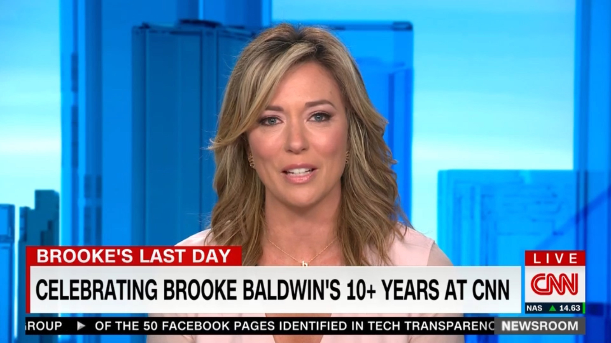

The New York Times
. Yesterday
CNN's Cuomo Condrum: A star Anchor with a brother in trouble

COVID 19
. LIVE
COVID-19: News and updates for Massachusetts
Bloomberg Opinion
. Yesterday
Thinking about getting a booster shot? Read this first.
Trending in United States
Wonder Bread
CNN News
. LIVE
Cold storm over the coast of Boston. Temperature to drop below 0.